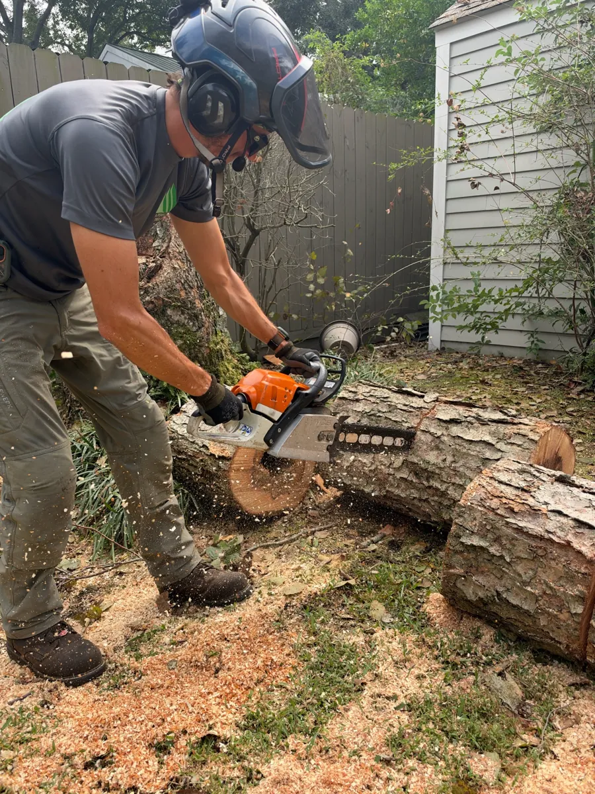
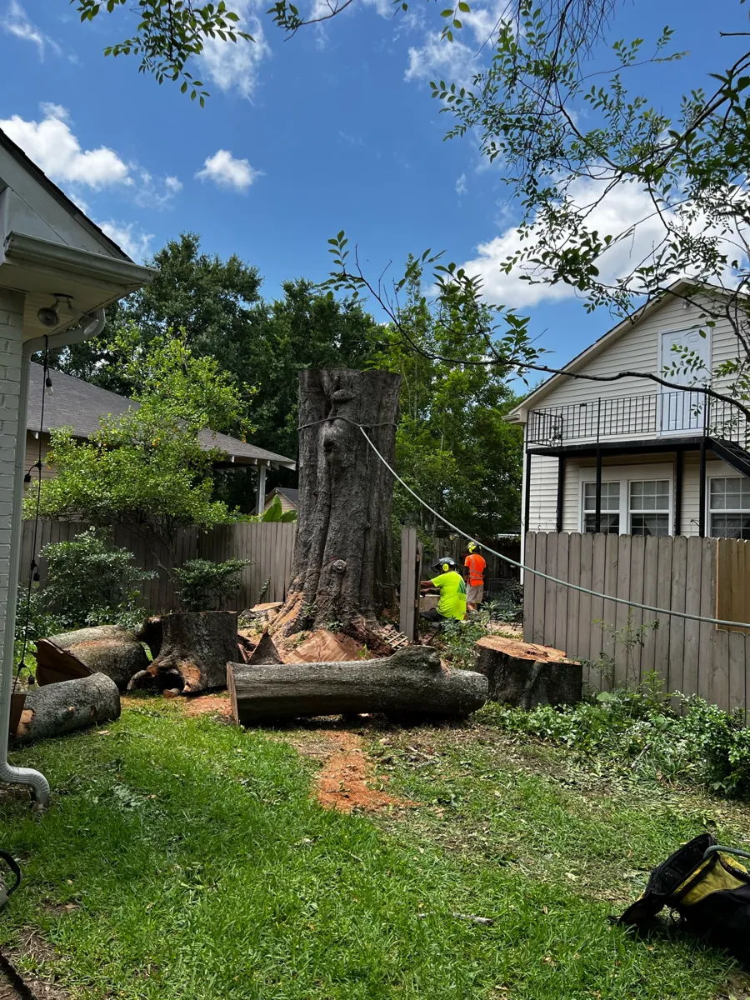
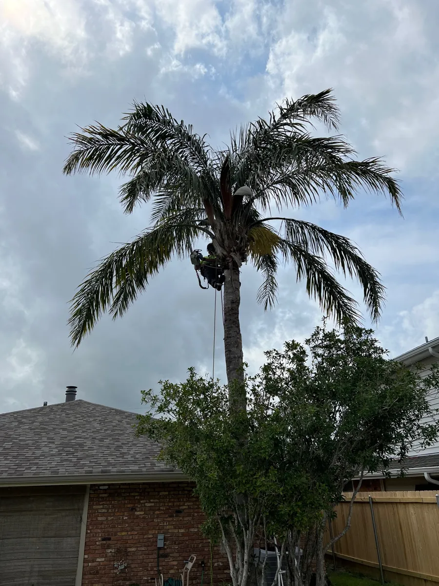

Tree Service in Metairie LA
Tree care in Metairie is about managing growth in limited space and preparing trees for weather that can change quickly. Many properties have mature trees growing close to homes, driveways, and neighboring lots, which means regular trimming and maintenance are not optional.
A Perfect Cut provides professional tree service Metairie, LA, helping homeowners keep trees healthy, controlled, and safer year-round. Our work focuses on reducing risk, improving structure, and preventing problems before storms expose them.
Urgent or unsafe?Call an Arborist: (504) 732-0779


Tree Services for Metairie Residential & Commercial Properties
We handle the types of tree issues homeowners in Metairie deal with regularly, especially in neighborhoods with tight lot lines and mature tree coverage.
Our tree services include:
- Tree trimming and structural pruning
- Tree removal, including hazardous or storm-damaged trees
- Tree risk assessments and safety evaluations
- emergency tree service
- Stump grinding and stump removal
- Hazardous limb removal
- Storm debris cleanup
- Ongoing residential tree maintenance
Every job is planned around the property. In Metairie, that usually means working around fences, driveways, homes, and nearby structures without causing damage.
Recent Tree Service Projects in Metairie
We completed a careful tree removal where our crew worked around the main structure with minimal impact to the surrounding property. Read our review on Google to see what the homeowner had to say about the experience!
A Perfect Cut Tree Service handling a clean, controlled tree removal in Metairie
Another job done right by A Perfect Cut in Metairie

Tree Trimming & Pruning in Metairie, LA
Tree trimming in Metairie is primarily about control and prevention. With long growing seasons and consistent moisture, branches extend quickly and become heavier over time.
We focus on removing overextended limbs, reducing canopy weight, and improving structure so trees are more stable during storms.
In many Metairie neighborhoods, trees are planted close to homes or property lines. If branches are not managed, they begin to interfere with roofs, driveways, and neighboring properties. Over time, this increases the chance of storm damage or structural failure.
Proper pruning keeps trees balanced, reduces stress on limbs, and improves long-term health without overcutting or weakening the tree.

Tree Removal in Metairie, LA
Tree removal becomes necessary when a tree is no longer structurally safe, has suffered storm damage, or has outgrown its space.
In Metairie, this often includes:
- Trees leaning toward homes after heavy rain
- Storm-damaged trees with split trunks or hanging limbs
- Trees growing too close to structures or utilities
- Large trees with root instability
We use controlled removal methods to safely take down trees without damaging nearby structures. When space is limited, removals are planned carefully to protect surrounding property.
Our goal is always to recommend removal only when it is necessary, not as a default solution.
Emergency Tree Service in Metairie
Storms, high winds, and heavy rain can cause trees to fail quickly in this area. When that happens, response time matters.
We provide emergency tree service in Metairie for situations like:
- Fallen trees on homes or vehicles
- Trees blocking driveways or access points
- Hanging or broken limbs after storms
- Trees threatening roofs or power lines
Stump Grinding & Property Cleanup
After a tree is removed, the remaining stump can create issues for both safety and future use of the space.
Our stump grinding service removes the stump below ground level so the area can be restored. We also handle full debris removal and storm cleanup, leaving the property clean and usable after the work is complete.

Why Trees in Metairie Require Ongoing Maintenance
Trees in Southeast Louisiana grow rapidly due to long growing seasons, high humidity, and consistent rainfall. While this environment supports strong canopy development, it also creates conditions where trees can become overgrown, unbalanced, or structurally stressed if left unmanaged.
Common tree issues we see across Metairie include:
- Branches growing over roofs and driveways
- Dense canopies that catch strong storm winds
- Dead or weakened limbs falling unexpectedly
- Trees leaning due to saturated soil after storms
- Roots lifting sidewalks or affecting foundations
- Regular tree maintenance helps control these risks before they develop into expensive problems.

Benefits of Professional Tree Service
Professional tree care is not just about appearance. It also helps prevent larger problems that can be expensive or dangerous.
Some of the main benefits include:
- Improved safetyRemoving weak or damaged branches reduces the risk of falling limbs.
- Better storm resistanceBalanced trees handle strong winds much better than overgrown ones.
- Healthier treesCorrect pruning helps trees grow stronger and live longer.
- Protection for your propertyMaintaining proper clearance around roofs, driveways, and power lines helps prevent damage.
- Less emergency work laterRegular maintenance often prevents the need for urgent tree removal after storms.

Tree Trimming in Metairie for Storm Protection
Storm preparation is a major reason Metairie homeowners schedule tree trimming. Reducing excess weight and removing weak limbs before storm season can significantly lower the risk of damage.
We focus on:
- Removing overextended limbs
- Balancing uneven canopies
- Addressing branches affected by previous storms
- Improving overall tree stability
Preventive trimming is often far less costly than emergency work after a storm.
When Tree Removal Is Still Necessary
While trimming and maintenance solve many issues, some trees eventually become unsafe due to age, root instability, or storm damage. When tree removal in Metairie is the safest option, we explain why and handle the work carefully and efficiently.
Our goal is always to recommend the right service, not the biggest one.

How Metairie’s Climate Affects Tree Health and Storm Risk
Trees in Metairie grow in a warm, humid climate that allows them to reach large sizes quickly. While this environment supports healthy growth, it also creates conditions where trees can become heavy, unbalanced, or vulnerable during storms.
Jefferson Parish experiences long summers, frequent rain, and occasional tropical storms or hurricanes. These weather patterns can place significant stress on mature trees, especially those growing close to homes or streets.
The table below shows how common weather conditions in the Metairie area can impact tree stability and why regular tree maintenance is important.
| Climate Factor | Typical Conditions in Metairie | How It Affects Trees | Why Tree Maintenance Helps |
|---|---|---|---|
| High Humidity | Humidity levels often remain above 70% throughout much of the year | Encourages rapid tree growth but can also increase fungal disease and internal wood decay | Pruning improves airflow through the canopy and reduces moisture buildup |
| Heavy Rainfall | Frequent thunderstorms and periods of intense rain | Saturated soil can weaken root stability and cause trees to lean or uproot | Regular inspections help identify root instability and structural issues early |
| Strong Storm Winds | Tropical storms and hurricane-force winds during storm season | Large, dense canopies catch wind easily, increasing the risk of limb failure | Structural pruning and canopy thinning reduce wind resistance |
| Long Growing Season | Warm temperatures allow trees to grow most of the year | Branches extend farther and become heavier without regular trimming | Routine trimming keeps the tree balanced and prevents overextended limbs |
| Storm Debris & Previous Damage | Trees often experience repeated storm exposure over time | Old storm damage can weaken branches and create hidden structural problems | Ongoing maintenance removes compromised limbs before they fail |

Tree Removal Rules and Local Resources in Metairie
Metairie is part of Jefferson Parish, Louisiana, so most tree regulations come from the parish rather than a city government. In many cases, homeowners can trim or remove trees on their own property, but permits may be required depending on where the tree is located.
For example, trees located in the public right-of-way (typically the area between the street and sidewalk) are managed by the parish. These trees cannot usually be removed without approval from the parish Parkways Department.
Some neighborhoods in Metairie are also part of the Metairie Ridge Tree Preservation District, which was created to help protect mature trees in the area. In those locations, removing certain large trees may require additional approval or replacement planting.
If you’re planning tree removal, construction, or major landscaping changes, it’s a good idea to check local rules first.
Helpful local resources:
- Jefferson Parish Tree and Parkways Department https://www.jeffparish.gov/423/Parkways
- Jefferson Parish Permit Information https://www.jeffparish.gov/499/When-Do-I-Need-Not-Need-a-Permit
- Jefferson Parish Vegetation Removal Permit Application https://www.jeffparish.gov/DocumentCenter/View/1023/Vegetation-Removal-Permit-Application-Residential-PDF
- These resources explain when permits may be required and how tree work is handled on public property in Jefferson Parish.
Serving Metairie and Nearby Areas
In addition to Metairie, we provide tree service and tree trimming in:
- Old Metairie
- Jefferson
- Elmwood
- Kenner
- Lakeview
If you’re unsure whether your property is within our service area, just reach out and we’ll confirm.
Schedule Tree Service or Tree Trimming in Metairie, LA
If your trees need trimming, routine care, or professional evaluation, our team is ready to help. Regular service can prevent damage and keep your property safer through every season.
Contact A Perfect Cut Tree Service to schedule tree service or tree trimming in Metairie, LA.
We also serve nearby neighborhoods. See our Tree Service in Lakeview, LA page.
What to Photograph From a Safe Distance
Photos and video show us the tree, the property around it, how we would reach it, and any visible hazards.


Tree down or a broken limb?
Skip the photos and call. Calls are answered 24/7.
(504) 732-0779Office hours: Monday to Friday 7 AM to 5 PM, Saturday 7 AM to 3 PM, closed Sunday.

Ready to Show Us Your Tree?
Show us the tree. An arborist reviews what you send. Photos give us a first look. Some trees need an in-person visit before we can make a final recommendation.